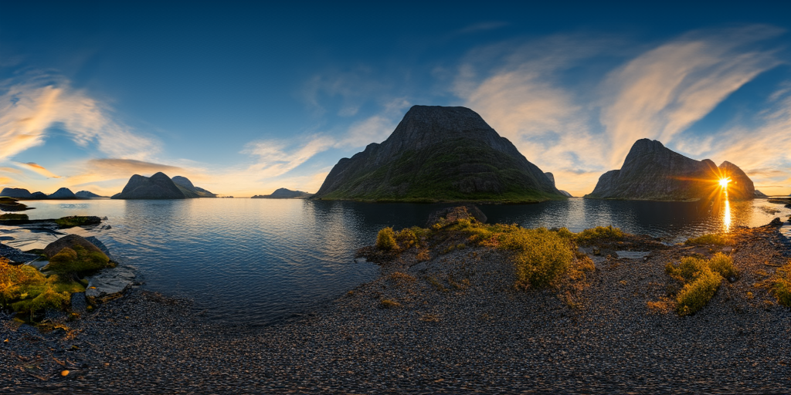

Curved Diffusion: A Generative Model With Optical Geometry Control
ECCV 2024
p

ECCV 2024
pState-of-the-art diffusion models can generate highly realistic images based on various conditioning like text, segmentation, and depth. However, an essential aspect often overlooked is the specific camera geometry used during image capture. The influence of different optical systems on the final scene appearance is frequently overlooked. This study introduces a framework that intimately integrates a text-to-image diffusion model with the particular lens geometry used in image rendering. Our method is based on a per-pixel coordinate conditioning method, enabling the control over the rendering geometry. Notably, we demonstrate the manipulation of curvature properties, achieving diverse visual effects, such as fish-eye, panoramic views, and spherical texturing using a single diffusion model.
Suppose, we wish to have an image with a fish-eye effect. Applying a lens geometry transformation in a post-process after the generation of the image produces low-quality image in highly expanded regions. Moreover, the corner regions which are behind the default image canvas are left uncovered.
We go beyond projective camera models, virtually allowing any grid warps as conditioning. We implement this with a per-pixel coordinate conditioning provided to the diffusion model, which is the spatial positions of a pixel in an unwarped image.
The training sample is processed with a random distortion, applied over both the image and normalized coordinates grid. Then, the warped image is noised with an additive noise εt correspondent to the denoising step t. The denoising U-net model takes the noised image concatenated with the warping field and predicts the denoised image. All the self-attention layers weights are re-weighted according to the original image pixels density. For more complex surfaces instead of the positional conditioning we use the metric tensor coefficients conditioning.
Comparison with the textual baseline: left image is generated with "fisheye" conditioning added to the text, while on the rightsecond we use the proposed per-pixel coordinates conditioning. Notably, the fisheye effect assured by text only is not aligned with the actual camera geometry. Thus, the undistorted image on the left still does not look rectified.
Spherical textures generation without (left) and with (right) the sphere-aware metrics conditioning. Notably, the texture generated with baseline has non-uniform bins sizes and texture-absorbing artifacts on the poles.

@article{voynov2023curved,
title={Curved Diffusion: A Generative Model With Optical Geometry Control},
author={Voynov, Andrey and Hertz, Amir and Arar, Moab and Fruchter, Shlomi and Cohen-Or, Daniel},
booktitle={arXiv preprint arxiv:2311.17609},
year={2023}
}
Acknowledgements: We thank Chu Qinghao, Yael Vinker, Yael Pritch and Yonatan Shafir for their valuable inputs that helped improve this work.